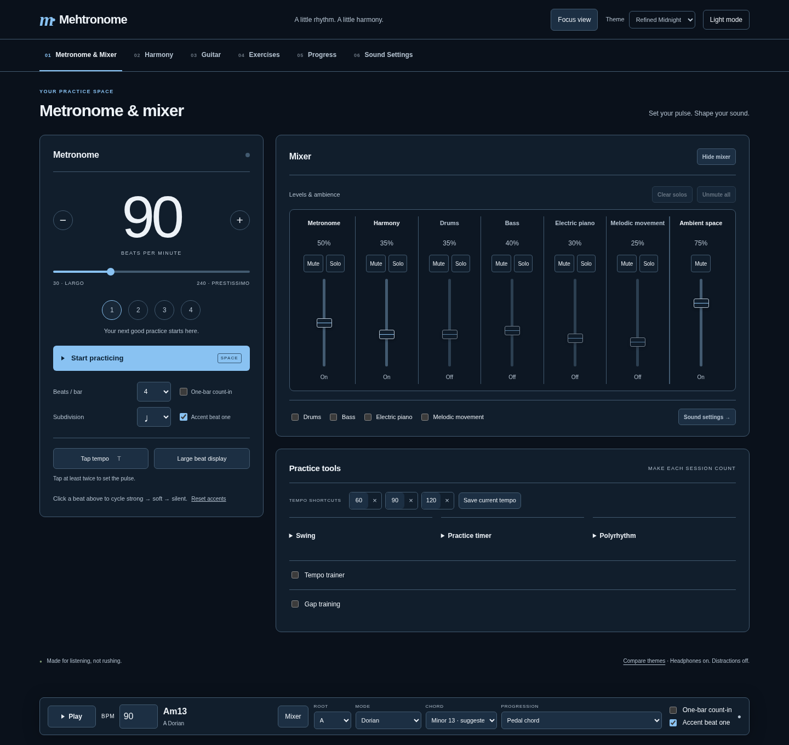

MEHTRONOME · COLOUR STUDIES
Same layout. Three dark colour directions.
Compare each palette on the mixer, chord graphics and fretboard. The app’s live colours are unchanged while we review these options.
Refined Midnight
Deep navy, cool blue controls and a restrained sky-blue accent.

Musical meaning stays consistent:RootChord toneModal colour note
These are screenshots of the colour studies, using the implemented layout. Refined Midnight is my recommended starting point. Text, secondary labels and primary-action contrast have been checked for all three proposed palettes.